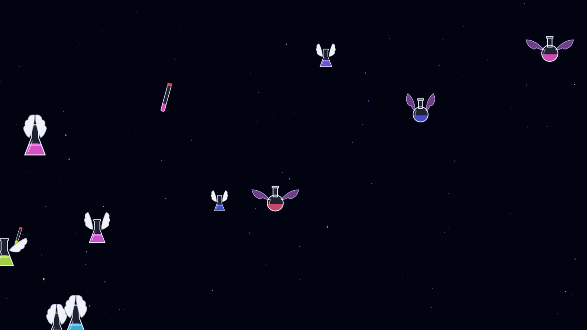
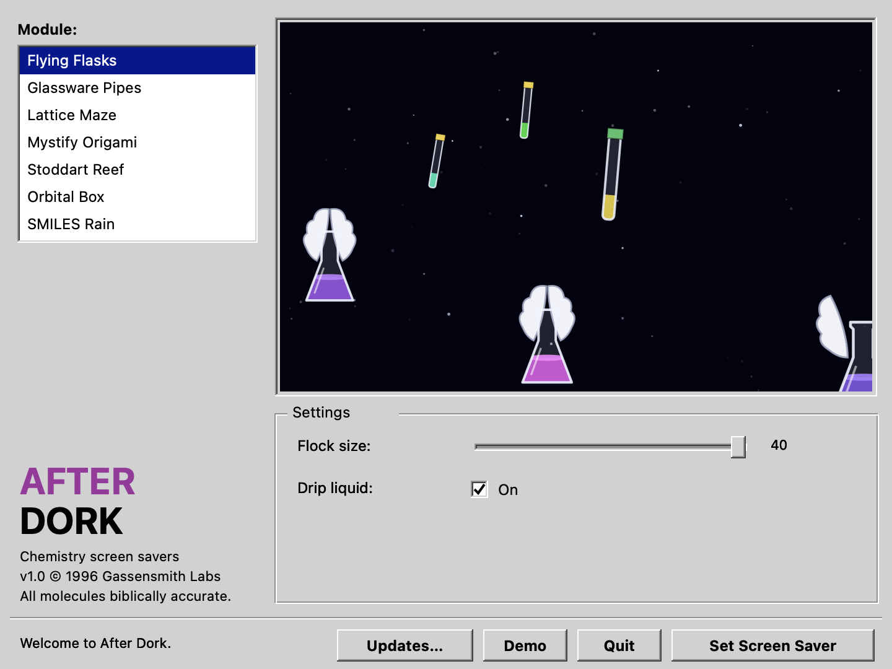

AD
After Dork
Chemistry screen savers for the Mac. Flying flasks, molecular mazes, and a little 1990s nostalgia.
Get After Dork- System
- macOS 11 or later
- Collection
- Eight screen savers
- Install
- Download ZIP, open the app
- Updates
- Built-in Sparkle updater

About
The lab has taken over the screen saver.
After Dork reimagines classic screen savers with chemistry: winged glassware, Schlenk lines, a metal–organic framework maze, and an aquarium of interlocked molecules. The animations are drawn in Swift, with adjustable settings for each module.
- GlasswareFlying Flasks and Schlenk Pipes bring the bench to your desktop.
- StructuresExplore Lattice Maze, Mystify Origami, and the molecular aquarium of Stoddart Reef.
- MoleculesOrbital Box morphs through orbital shapes; SMILES Rain drops molecular strings down the screen.
- Lab lifeCastaway Chemist follows a graduate student through a very eventful day in the lab.
Screen
Pick a module. Let the flasks fly.
Choose a screen saver, adjust its settings, and try it full screen with Demo. Set Screen Saver installs and selects the module for macOS.

Install
From ZIP to screen saver.
- Open the latest release and download the AfterDork ZIP under Assets.
- Unzip it, move AfterDork.app to Applications, and open it.
- Select a module and adjust its settings. Use Demo for a full-screen preview.
- Choose Set Screen Saver to install and select that module. Use the app’s updater for later versions.
Support
Start with the module and your Mac.
Report problems through GitHub issues. A short description of what happens in Demo and after Set Screen Saver helps distinguish rendering problems from macOS setup.
- IncludeApp version, macOS version, Mac model, module name, and the settings that reproduce the problem.
- CheckTry Demo, then use Set Screen Saver in the app to select the module again.
- SourceRead the project’s module guide and build instructions.